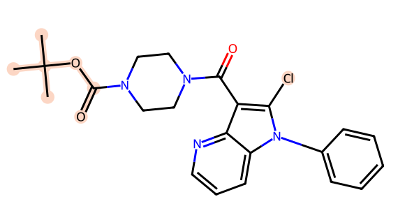
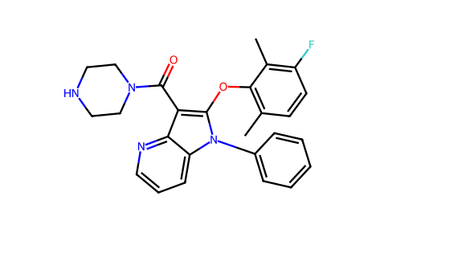

A turn in the RENIN campaign
Patent routes
Measured assays
Model links
● ○ ○
Choose a move
Stock an intermediate

I5 on the shelf
9
→
2
steps to CPD 121
Make & assay
CPD 239
9 nM
measured reference
Query FEP

CPD 239 ⇢ 270
≈ 1 nM
predicted potency
Choose again
or
Best compound assayed
Hover or tap a drawing for the rules.